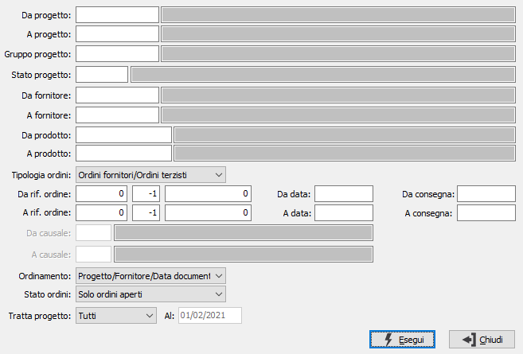

Analisi ordini per progetto
Il programma effettua l’analisi degli ordini fornitori e/o terzisti suddividendoli per fornitore e progetto riportando analiticamente i valori dei singoli prodotti ed il totale per fornitore e per progetto.

E' possibile selezionare i documenti da stampare, specificandoli nei relativi campi a video, per progetto, per gruppo progetto, per stato progetto, per fornitore, per prodotto, per riferimento tramite anno, serie (-1 sta per tutte le serie) e numero, per data documento, per data di consegna e per causale nel caso si sia richiesta l'analisi per una singola tipologia di ordine, tramite l'omonima casella.
E' possibile ordinare la stampa per progetto, fornitore, data documento o data consegna o prodotto tramite la casella "Ordinamento". Tramite la casella "Stato ordini" è possibile selezionare solo gli ordini aperti, con merce ancora da ricevere, oppure tutti gli ordini comprendendo anche quelli già evasi completamente.
E' possibile indicare lo stato dei progetti da analizzare tramite il parametro "Tratto progetto" scegliendo tra Tutti, Aperto, Chiuso o Sospeso; per gli stati Aperto e Chiuso è possibile indicare una data.